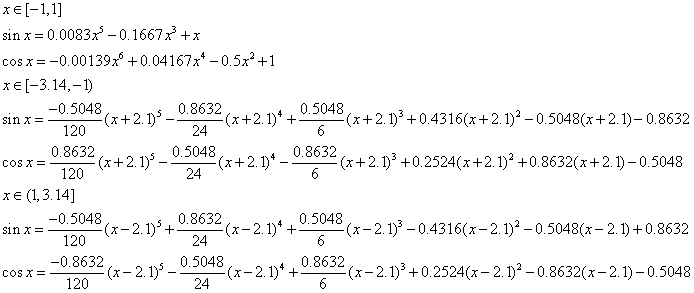
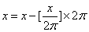
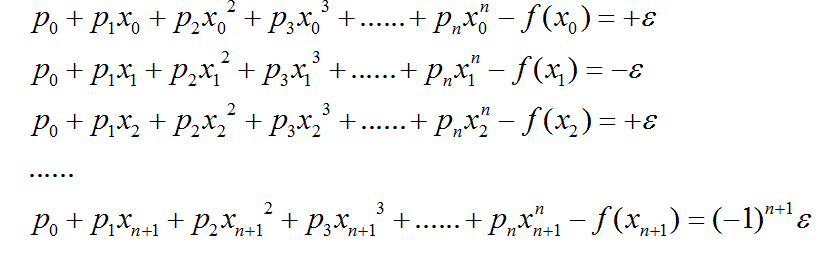
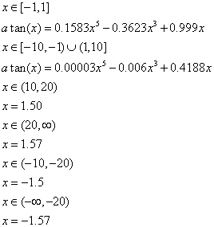

How to Use This Software
1. You can input an angle in radians, and click sine, cosine or atan button to get the value and the estimation error.
2. In this calculation, the following polynomials are used to approximate the sine and cosine functions:

Above, Taylor polynomials are used at the point 0 and 2.1, respectively, to obtain a more accurate approximation.
3. Because the sine and cosine are periodic functions, the following equation is used to reduce from any input to [-3.14,3.14]:

For atan function, Remez's algorithm is used to calculate the coefficients using the following equations:

4. The following equations are used to approximate the arctangent function:

5. The error is calculated by the following equation:
error=p(x)-Math.sin(x)/cos(x)/atan(x)
References:
[1] J.M. MULLER,"Elementary functions: Algorithms and implementation",Birkbauser,1997.
[2] I. Koren,"Computer Arithmetric Algorithms",A.K. Peters,2002
[3] http://www.mathworks.com/help/matlab/index.html